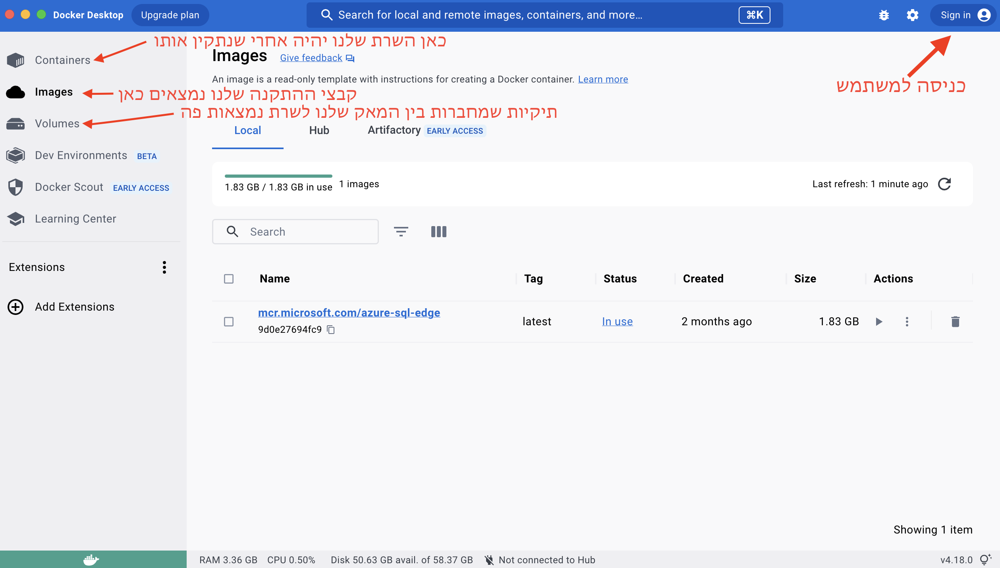
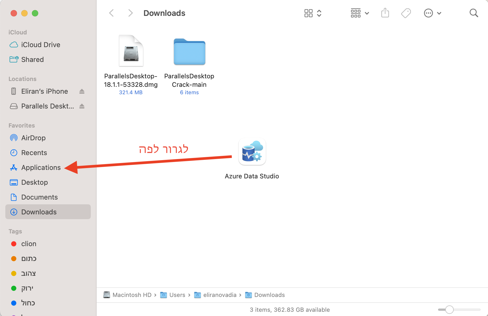
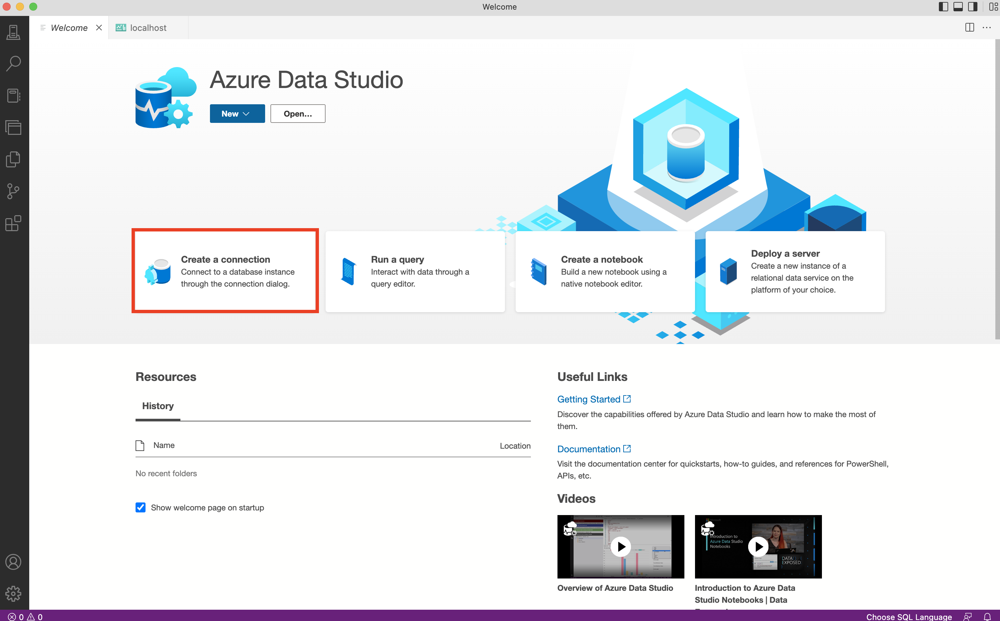
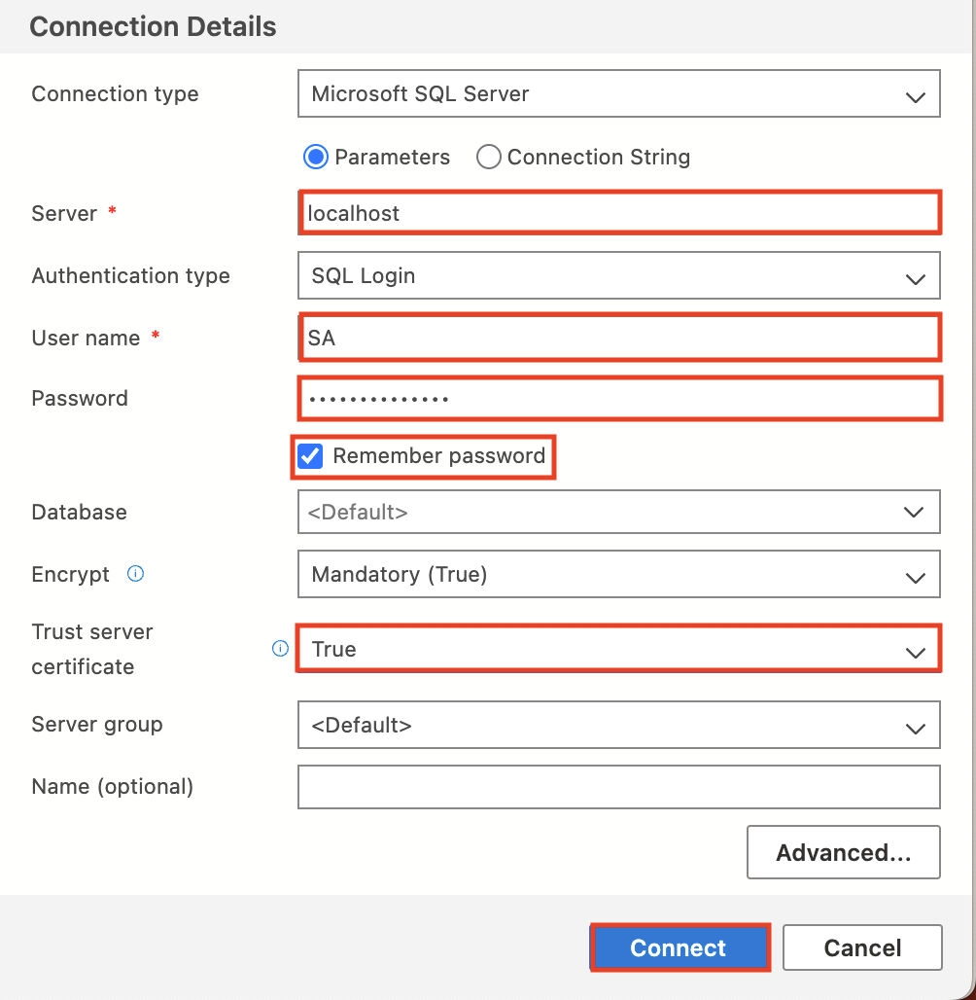

הכלים שהפקולטה מבקשת לעבוד איתם במערכות בסיסי נתונים הם כלים שעובדים רק על וינדוס, הבעיה היא שגם אם נתקין וינדוס למאק כמו שהראתי במדריך למערכות הפעלה, התוכנות עדיין לא יעבדו. בשביל זה נשתמש בכלים חלופיים שמייקרוסופט נותנת ואני מקווה שהם יתנו מענה מלא לכל מה שנעשה השנה, אעדכן את המדריך לאורך הסמסטר בעת הצורך כמובן
כדי להריץ את השרת על המאק שלנו נצטרך להוריד תוכנה שיכולה לפתוח מכונה וירטואלית קטנה במיוחד בשביל השרת שלנו
Docker קוראים לתוכנה
עד שההורדה תסתיים נירשם לאתר פה
השלב הבא הוא להוריד את קובץ ההתקנה של השרת שלנו, נעשה את זה דרך הטרמינל שלנו עם הפקודה הבאה
אחרי שהורדנו את קובץ ההתקנה, נתקין אותו עם הפקודה הבאה
לא לנסות ולהחליף אותה MyPassword123# הסיסמה לשרת שלנו היא
אחרי שהשרת שלנו פועל אנחנו צריכים דרך לגשת אליו ולערוך אותו
נוריד את התוכנה מהקישור הזה
אחרי שהורדנו את התוכנה נצטרך לגרור אותה צורה ידנית מתיקית ההורדות שלנו לתיקית האפליקציות
נפתח את התוכנה ונלחץ על חיבור חדש
נרשום את הפרטים הבאים במדויק לפי התמונה הבאה כולל אותיות גדולות, לא לשכוח את הסיסמה שהגדרנו קודם
בסיס הנתונים אמור להופיע מולכם
🎉וסיימנו